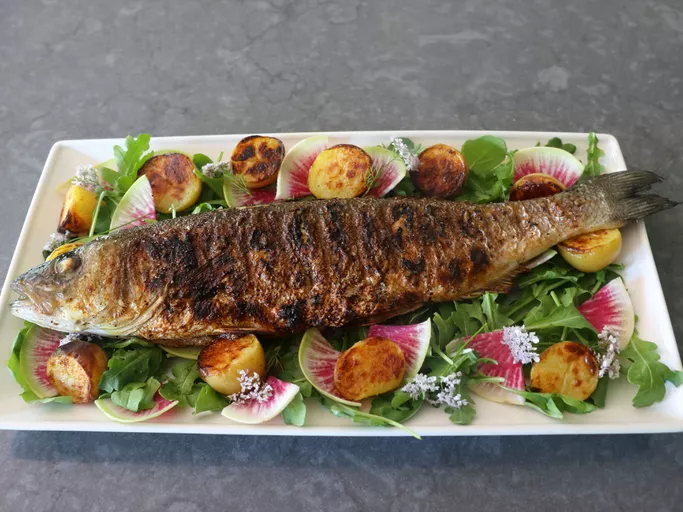

Grilled Whole Fish
Prep Time: 15 mins
Cook Time: 10 mins
Servings: 2
Description
Grilling a whole fish is much easier than grilling it in smaller pieces. Plus, I think a whole grilled fish looks and tastes better, too. I like to use branzino, a delicious Mediterranean fish, but this method works with other whole fish as well.
Ingredient
- 1 teaspoon kosher salt
- 1/2 teaspoon freshly ground black pepper
- 1/2 teaspoon paprika
- 1/2 teaspoon garlic powder
- 1 pinch cayenne
- 1 whole branzino (about 1.25 pounds), scaled and gutted
- 3 whole chives
- 2 sprigs tarragon
- 2 sprigs Italian parsley
- 1 tablespoon olive oil
- 1 large lemon, quartered
Instructions
- Step 1: Mix salt, pepper, paprika, garlic powder, and cayenne together in small bowl to make seasoning salt.
- Step 2: Place the fish on a large piece of parchment paper. Generously season the inside cavity of the fish with the seasoning salt. Stuff chives, tarragon, and parsley into the cavity, making sure everything’s tucked inside. Brush the outside of the fish with olive oil, and season both sides generously with the salt mixture.
- Step 3: Wrap fish up in parchment paper and chill in the refrigerator for about 30 minutes to allow flavors to meld. Fish can also be grilled immediately if desired.
- Step 4: Meanwhile, build a small charcoal fire in your grill, and let it burn until the coals are almost all white. If necessary, move some of the coals away from the center, so the heat is not too intense directly under the fish.
- Step 5: Carefully place the stuffed fish onto the grill. Grill on the first side for about 4 minutes, then carefully flip over. Grill the second side for about 4 minutes. If temperature is too hot, grill can be covered with the vent open during cooking time to lower the temperature of the coals. Once both sides of the fish have browned, you can carefully turn it back and forth every few minutes until fish is cooked to the desired doneness.
- Step 6: Check for doneness with a thermometer. The internal temperature in the thickest part of the fish should read 135 degrees F (57 degrees C). Remove the fish from the grill and serve with fresh lemon wedges.